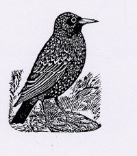

Wednesday, August the 18th, 2004
back to: title, date or indexes
A third of the world's starling population lives in North America. The fact that possibly over a billion starlings roam the skies is due to one man, a rich New York drug manufacturer named Eugene Schieffelin, who in 1890 released eighty imported starlings in Central Park as part of his thoroughly sensible plan to introduce to the United States all the birds mentioned in the works of Shakespeare. Those who do not love starlings see them as pests, and indeed it is not unknown for a hungry flock to devour twenty tons of potatoes, spread histoplasmosis, and make life difficult for bluebirds and woodpeckers. Attempts to reduce or scare off pesky starlings have included the use of artificial owls, radio broadcasts of the starlings' alarm call, Roman candles, and a mass publicity drive to encourage people to eat starling pie (with recipes).

This is what a starling looks like (side view). Best when not cooked in a pie.
Hooting Yard on the Air, April the 27th, 2005 : “Anaxagrotax” (starts around 19:05)